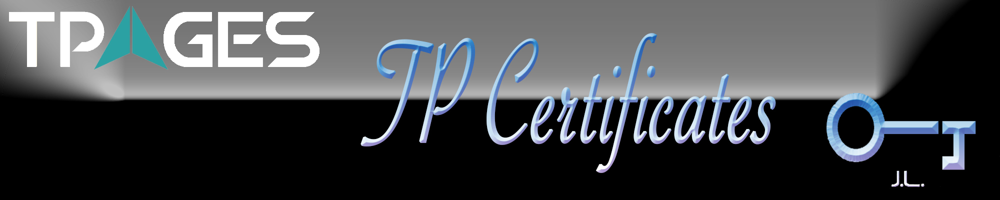

TPages Certificate Infrastructure (TCI)#

This repository stores the RSA based public key (certificate) and private key pairs which are used for website secure access (https), server ssh login, vpn authentication, and so on. Also, it aims at building private certificates and making the building process more easily.
Table of Contents#
File Notes#
Five directories are contained in this repo, within which consists of certificates for different usage.
| Directory | Files |Notes | | -------- | ----- | ------ | | ca | CA cert & key pairs | Local self-signed root ca | | server | Itserver (192.168.3.17) and singapore dev server (47.88.151.151) cert & key pairs | Tpages dev servers cert & key singed by local ca | | Godaddy | GoDaddy cert authority in case that you want to add godaddy authority certs to system cert center, cert and key pairs for tpages.cn and *.tpages.cn | Premium certificates signed by Godaddy | | production | Tpages merchant key pairs in production | Used for 3rd party payment, including alipay, wechat pay, and wechat app pay | | Personal | Certs and key paris of Leon, JC, Jerry, nginx, loggie | Used for alicloud server ssh/sftp login, pptp vpn authentication|Command Line#
To make a private certificate, you should have openssl installed on your server. Details of the installation process will not be covered here.
Establish CA#
The CA is a also a pair of public and private key. The difference is the key pair is used for nothing but to sigh and verify the validity of a certificate.
Tpages CA is generated on request of the following information:
- Country Name: CN
- State or Province Name: GD
- Locality Name: GZ
- Organization Name: Tianao Internet Technology Limited
- Organization Unit Name: Certificate Center
- Common Name: tianao.com.hk
- Email Address: admin@tpages.com
with the following commands:
mkdir ca && cd ca
openssl genrsa -out cakey.pem 2048
openssl req -new -x509 -days 3650 -key cakey.pem -out cacert.pem
Generate Server Certificates#
The server certificates are used for secure http access to a website, and it’s usually stored in pem, cert or crt file format.
Tpages ITSERVER certificate is generated on request of the following information:
- Country Name: CN
- State or Province Name: GD
- Locality Name: GZ
- Organization Name: Tianao Internet Technology Limited
- Organization Unit Name: Certificate Center
- Common Name: 192.168.3.15
- Email Address: admin@tpages.com
with the following commands:
mkdir servers && cd servers
openssl genrsa -out itserver.key 2048
openssl req -new -key itserver.key -out itserver.csr
openssl x509 -req -in itserver.csr -days 3650 -CA ../ca/cacert.pem -CAkey ../ca/cakey.pem -CAcreateserial -out itserver.pem
If you wish to generate a server certificate with domain name, just change the common name to the domain name. If you want to generate a certificate with multi subdomain names, also change the common name to the domain name with a wildcard ahead of it (such as *.tpages.cn).
Generate Personal Certificates#
The Personal certificates are the same like server certificates, but with different usage.
Here is a sample personal certificate request information:
- Country Name: CN
- State or Province Name: GD
- Locality Name: GZ
- Organization Name: Tianao Internet Technology Limited
- Organization Unit Name: Certificate Center
- Common Name: Leon
- Email Address: leon@tpages.com
with the following commands:
mkdir personal && cd personal
openssl genrsa -out leon.key 2048
openssl req -new -key leon.key -out leon.csr
openssl x509 -req -in leon.csr -days 3650 -CA ../ca/cacert.pem -CAkey ../ca/cakey.pem -CAcreateserial -out leon.pem
Change Certificate Format#
# change certificate format to p12 (public and private key combined key combined)
openssl pkcs12 -export -clcerts -in leon.pem -inkey leon.key -out leon.p12
- Encrypt and Decrypt Key File
Since the key is quite important, we should keep the key protected. The following are commands to encrypt and decrypt key file with openssl.
openssl enc -des -e -a -in leon.key -out leon.key.des # encrypt
openssl enc -des -d -a -in leon.key.des -out leon.key # decrypt
- Add Passphase to Key
Also we can add a passphase to protect the key. To make it, you should install openssh first.
ssh-keygen -p -f leon.key
Type the passphase when the console promote to you.
Generate Public Key from Private Key#
A pulic key can be generated according to the private key in different formats.
#Generate ssh-like public key according to openssl generated private key
ssh-keygen -f leon.key -y > ~/.ssh/id_rsa.pub
#Generate openssl public key according to its private key
openssl rsa -in leon.key -pubout -out leon.pem
Add Cert Authority to System NSSDB#
# Add Root Certificate Authority
sudo certutil -d sql:/etc/pki/nssdb -A -t "C,," -n GoDaddyRootCA -i GoDaddy_Root_Certificate_Authority.cer
# Add Intermediate Certificate Authority
sudo certutil -d sql:/etc/pki/nssdb -A -t ",," -n GoDaddySecuretCA -i GoDaddy_Secure_Certificate_Authority.cer
TODO#
- [X] Customized certificates for tpages servers and staffs
- [X] Enabled ssh certificate login and vpn login
- [ ] Build handy certificate auto generate tools